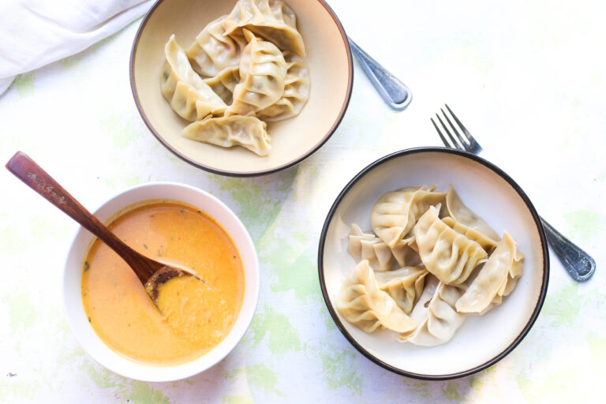

Home
Chicken MoMo

Description
Momo is the undisputed super star of Nepali cuisine that is most well known internationally. Originating in Tibet, this beloved dish was brought to Nepal by travellers and tradespeople and has since evolved to incorporate Nepali ingredients and spices, making it a true staple of Nepali cuisine.
In Nepali restaurants, Chicken Momo is always a favourite dish, served steaming hot and bursting with flavour.
Chicken momo is typically served with a side of achar, a spicy and tangy dipping sauce that perfectly complements the savoury taste of the momos.It’s a dumpling filled with meat or vegetables as well. It is eaten with tomato pickle (golbheda ko achar).
Ingredients
Momo
- 500 g chicken mince (using thigh meat)
- ½ red onion, finely chopped
- ¼ cup coriander, finely chopped
- 2 tsp fresh minced ginger
- 2 tsp minced garlic
- ½ tsp ground coriander
- ¼ tsp turmeric
- ¼ tsp ground cumin
- 1 long green chilli, finely chopped
- 2 tbsp vegetable oil or melted butte
- salt to taste
- 60 round wonton wrappers
Tomato pickle (Golbheda ko achar)
- 1 tbsp mustard oil
- 2 tsp minced garlic
- 2 tsp minced ginger
- ¼ tsp fenugreek seed
- 1 dried long red chilli, finely chopped
- 1 pinch of Jimbu (mountain herbs)
- 500 g ripe tomatoes
- ¼ cup coriander, chopped
- 1 pinch ground Sichuan pepper
Instructions
Tomato Pickle (Achar)

- Heat mustard oil in a small saucepan over medium heat.
- Add garlic and ginger, fry for a few seconds until they start to turn light golden
- Add fenugreek seeds, dried chillies, and jimbu. Stir for a few more seconds until the fenugreek turns golden.
- Add chopped tomatoes and cook for about 10 minutes, stirring occasionally, until reduced and starting to thicken.
- Set aside to cool, then blend until smooth.
Momo
- In a large bowl, combine all filling ingredients. Mix well.
- Cover and set aside for 10–15 minutes to let the flavours develop.
- Prepare a steamer with water in the base and bring to a boil over high heat.
- Lay out 6 wrappers on a clean surface.
- Moisten the top edge of each wrapper with a wet finger.
- Moisten the top edge of each wrapper with a wet finger.
- Shape the momos:
- Half-moon style: Fold almost in half, pleat one side while curving it so the momo sits upright.
- Moneybag style: Gather the edges at the top and twist, leaving a small steam vent in the centre.
- Repeat with the remaining wrappers and filling.
- Steam the momos for 8–10 minutes, or until the wrappers are tender.
Serve
Serve hot with tomato pickle (achar) or your favourite condiments.